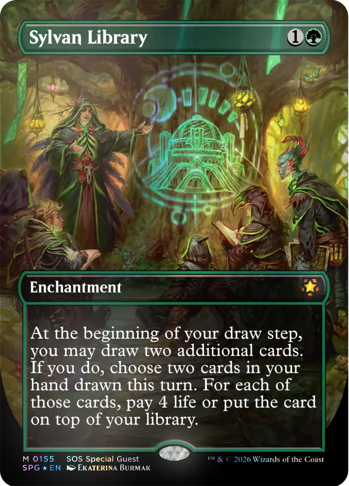
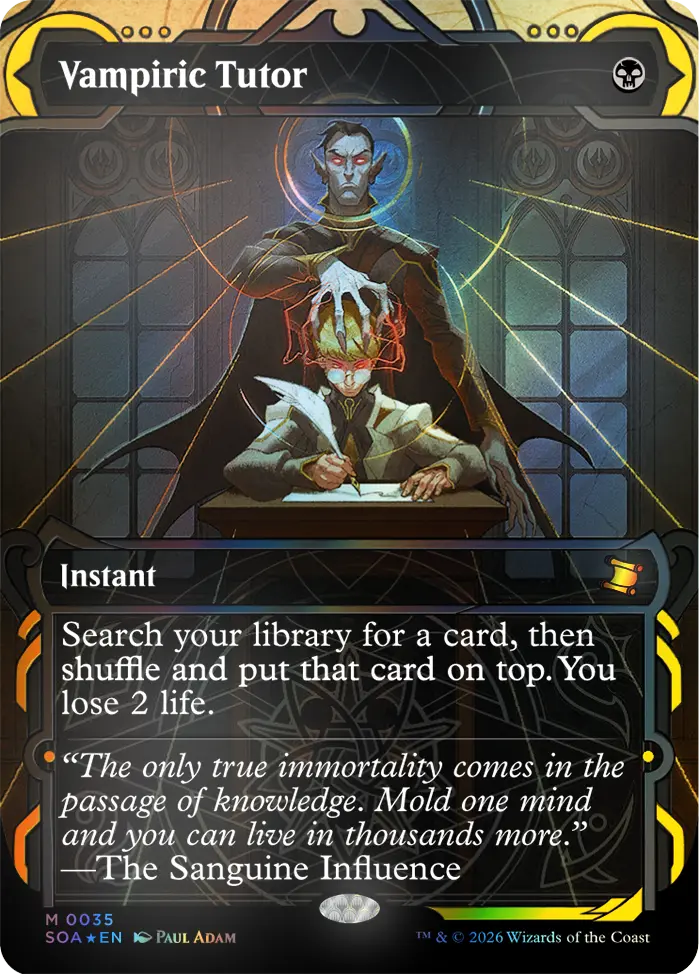
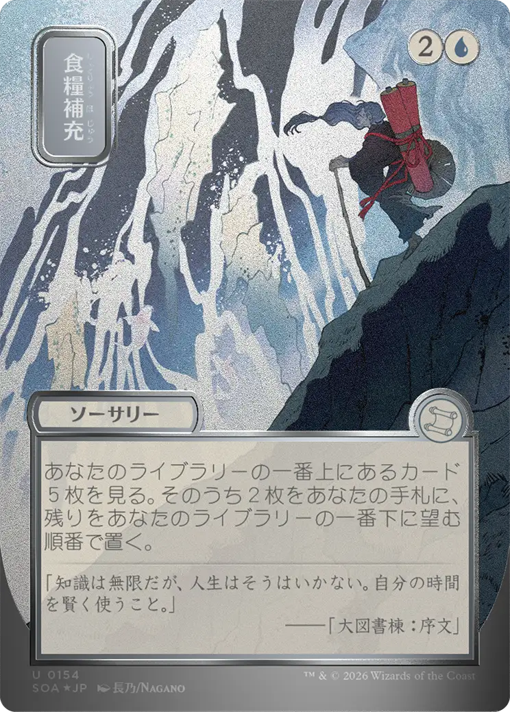
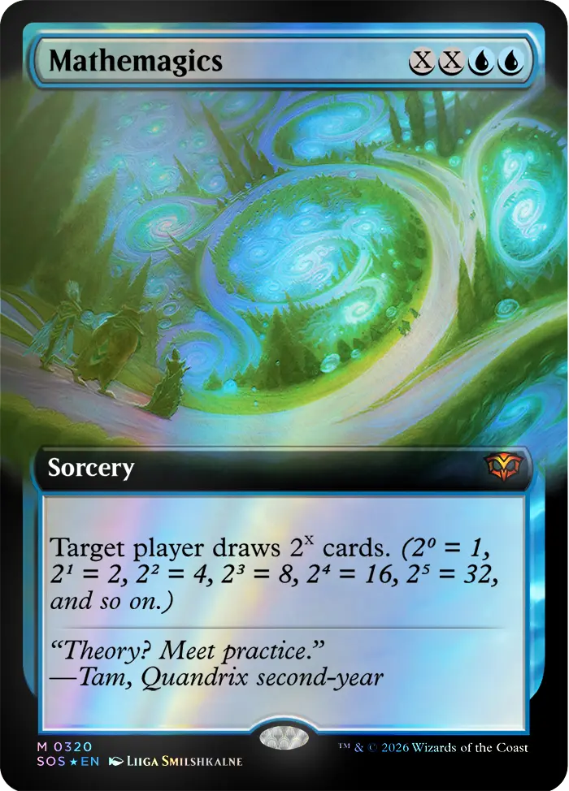

ScrollRenderer · TransformFeedback · Scroll Image
Scroll Image.
The Scroll Renderer recipe provides a framework for scroll-linked
WebGL effects on arbitrary DOM elements. It comes with a couple of
different classes to link to WebGL drawables:
ScrollScene forms the base layer, linking arbitrary
DOM elements to WebGL effects, and ScrollImage links
individual images to scroll-reactive WebGL effects.
It controls a single WebGL context and render loop, allowing for complex layered effects with multiple scroll-linked elements without the overhead of multiple contexts or loops.
In this demo, we've linked the background shader to a
ScrollScene anchored to a fixed full-viewport
element, and each of the four foreground images to individual
ScrollImages. The scroll position of each image is
tracked separately via onBeforeRender, allowing for
independent parallax and distortion effects.
Hit the "WEBGL" toggle, top-left to switch between WebGL and DOM views so you can see how the image positioning informs the shader layout.

01 · How to
Example.
Each image is a grid mesh whose vertices are simulated on the
GPU with a TransformFeedback: every frame, a
simulation pass updates the position and velocity of each vertex,
and the image is drawn from the results. Scroll-linked distortion
and mouse interaction are fed to the simulation as uniforms, and
a noise function is used to create an organic erosion effect
around the edges.
const renderer = new ScrollRenderer()
document.body.appendChild(renderer.canvas)
document.querySelectorAll('.blade-img').forEach((imgEl) => {
const drawable = new Drawable(gl)
const scene = new ScrollImage({ gl, element: imgEl, scene: drawable })
const program = new Program(gl, {
vertex: imageVert,
fragment: imageFrag,
uniforms: { ...scene.uniforms },
transparent: true,
})
new Mesh(gl, {
geometry: new Plane(gl, { widthSegments: 24, heightSegments: 18 }),
program,
}).setParent(drawable)
renderer.addScene(scene)
})
renderer.playing = true
02 · ScrollRenderer
One canvas. Many scenes.
ScrollRenderer manages a single fixed
<canvas> and one
requestAnimationFrame loop for all registered scenes.
Each scene is scissor-tested to its DOM element's exact pixel
bounds, so multiple WebGL effects share one context with no
overdraw outside their element.
Scenes outside the viewport are skipped automatically via
IntersectionObserver. The aurora background is a
ScrollScene anchored to a fixed full-viewport
element. Which shows off the fact that scroll renderer just knows
where to draw things.

03 · Uniforms
Wired up automatically.
ScrollScene maintains a set of uniforms that are
updated every frame and ready to spread directly into your
Program: u_time (elapsed),
u_resolution (element size in physical pixels), and
u_origin (element position in both pixel and NDC
space). ScrollImage adds u_image and
u_imageSize for the GPU-uploaded texture.
Custom uniforms - like the scroll velocity and mouse position used
for the cloth simulation here - are created with
Uniform and merged in alongside them. Update
.value each frame inside onBeforeRender
and the program picks up the change automatically.
const u_mouse = new Uniform({
name: 'u_mouse', value: [0.5, 0.5], kind: 'float_vec2',
})
const program = new Program(gl, {
uniforms: {
...scene.uniforms, // u_time, u_resolution, u_origin,
// u_image, u_imageSize
u_mouse,
},
})
scene.onBeforeRender = () => {
u_mouse.value = mouse
}
04 · Another image
We had a fourth image.
It needed to go somewhere. Here it is. It looks great. The cloth effect works on it too.
There's no technical insight here. We just didn't want to waste it.